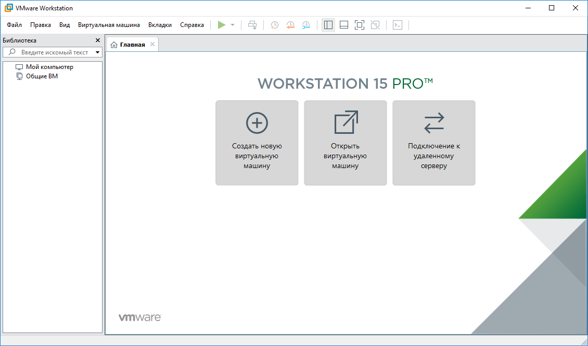
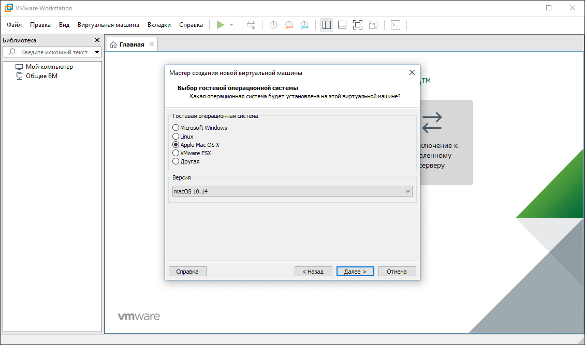
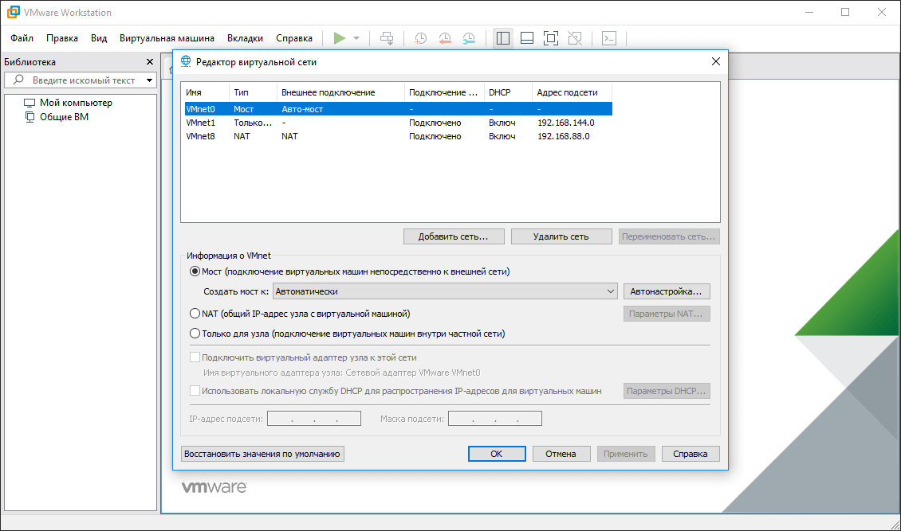
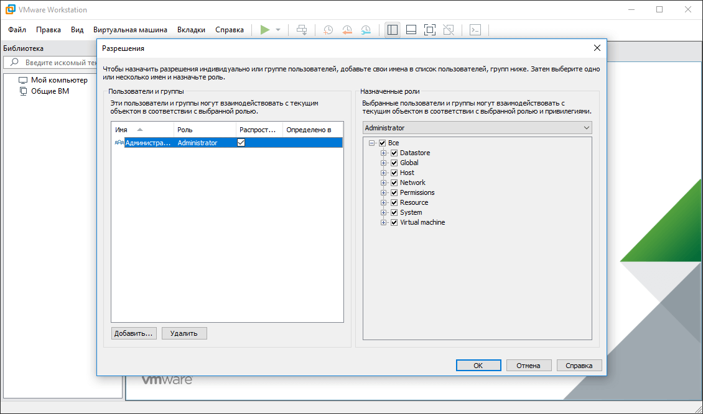

VMware Workstation 15 Pro 15.5.2.15785246

VMware Workstation - a professional program for working with virtual machines. Designed for people who test software, but can also be used to create a working office machine, which is useful when an accountant, Aunt Luba, constantly breaks something. This system has a lot of possibilities, therefore, see the detailed description and reviews on local Internet and on YouTube. On my own behalf I will say that it is with the help of this software package that I test assemblies for you on different systems.
Assembly information
General information:
Type: installation
Languages: English, Russian by Loginvovchyk
Treatment: AMPED
Additionally: applied a patch to install MacOS
To run MacOS in the machine’s VMX file, add the line
smc.version = "0"
Only the most popular VMware Tools are left in the assembly Windows, Linux, and MacOS.
The rest (linuxPreGlibc25.iso, netware.iso, solaris.iso, VirtualPrinter-Linux.iso, VirtualPrinter-Windows.iso, winPre2k.iso)
are available for download separately. Or the program will automatically download them via the Internet if necessary.
Command line parameters:
Silent installation of the Russian version: / S / QR
Silent installation of the English version: / S / QE
Selecting the installation location: / D = WAY
The / D = PATH key must be specified with the most recent
Example: Install.exe / S / QR / D = C: \ MyProgram
Supported Windows operating systems:
Type: installation
Languages: English, Russian by Loginvovchyk
Treatment: AMPED
Additionally: applied a patch to install MacOS
To run MacOS in the machine’s VMX file, add the line
smc.version = "0"
Only the most popular VMware Tools are left in the assembly Windows, Linux, and MacOS.
The rest (linuxPreGlibc25.iso, netware.iso, solaris.iso, VirtualPrinter-Linux.iso, VirtualPrinter-Windows.iso, winPre2k.iso)
are available for download separately. Or the program will automatically download them via the Internet if necessary.
Command line parameters:
Silent installation of the Russian version: / S / QR
Silent installation of the English version: / S / QE
Selecting the installation location: / D = WAY
The / D = PATH key must be specified with the most recent
Example: Install.exe / S / QR / D = C: \ MyProgram
Supported Windows operating systems:
7 SP1 (64-bit) 8.1 (64-bit) 10 (64-bit)
   
×